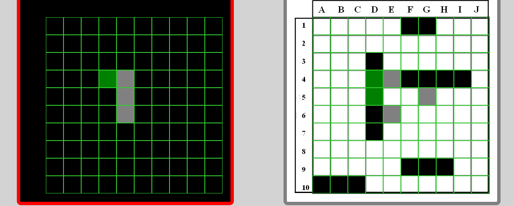
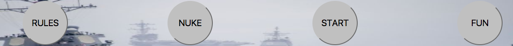
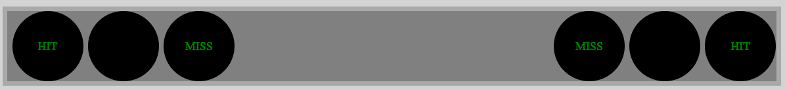

Two players each have a 10 X 10 grid each player.
Each player has 5 ships that can be placed horizon or vertical only.
Total of 17 hitpoints per side.
carrier is 5 hitpoints
battleship is 4 hitpoints
cruiser is 3 hitpoints
submarine is 3 hitpoints
destroyer is 2 hitpoints
Game starts off with players prompted to enter their names. After entered the game builds each player a 10x10 grid. Player 1 starts by assigning the locations of their ships on the board. This is done by selecting the starting and end coordinates for each ship. After player 1 assigns all 5 ships of their sheeps (a total of 17 hitpoints), their grid will be covered in a ‘fog of war’ and player 2 is prompted to get ready to assign their ships on their grid. Once player 2 assigns all their ships, the game covers their grid in a ‘fog of war’ and player 1 will get prompted to start the game.
Player 1 selects a black square on player 2's board, if the square returns a 'hit' a green square will appear. If it is a 'miss' a gray square will appear. Both 'hits' and 'misses' count will appear on below console. After player 1 takes their turn, their grid will be covered with a ’fog of war'. Then player 2 will be prompted to get ready. Once they accept, they will be able to see their grid but not player 1's grid. The player that sinks all the opponent’s ships ( total of 17 hits) wins!
Below are the buttons found on top of the game. Rules, displays the rules of the game. Nuke, will reload the website and will lose all setings of the game. Start, will start the normal game. Fun, is the Kim Jong Un vs Donald Trump BETA game version of Battleship.
Below console display shows the number of hits and miss for each player. If player one gets hit or miss by player 2 it will show below their grid.
Kim Jong Un vs Donald Trump Battleship
Korean People's Navy (PKN)
Total of 10 ships with a total hitpoints of 21.
1X Kim Jong-un's personal destroyer 3 hitpoints
1X Dennis Rodman frigate 2 hitpoints
1X frigate 2 hitpoints
1X People\'s Party Corvette 2 hitpoints
3X corvette 2 hitpoints
3X submarine 2 hitpoints
United States Navy (USN)
Total of 6 ships with a total hitpoints of 25.
1X supercarrier 8 hitpoints
2X AEGIS cruiser 4 hitpoints
1X destroyer 3 hitpoints
2X ballastic submarine 3 hitpoints
Plays similar to the regular version of Battleship except for US Navy has more hitpoints and The Korean People's Navy has more ships.